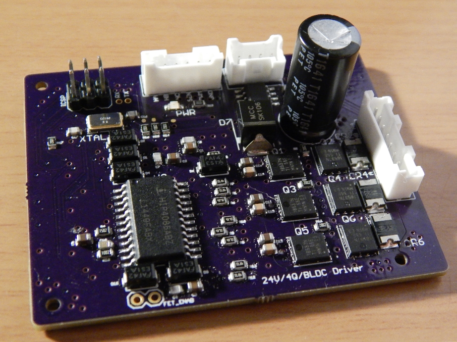
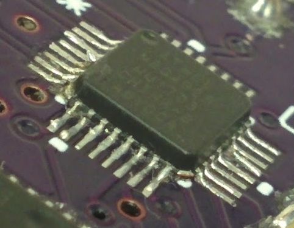

Kyle Hess - Seattle, WA
Brushless DC Motor Driver PCB
Designed specifically for the Nanotec DF45 16 pole, three phase brushless DC motor with hall sensor feedback. This driver was a crucial component of a larger, controls capstone project. The capstone was a group project, but this module was delegated to me.
Design
The design for this driver was heavily based on the driver design from my other motor controller project. The driver circuitry was all based around the HIP4086 3-phase MOSFET driver made by Intersil. To control the switching sequence, a discrete Atmel Atmega328p microcontroller was utilized in the design. In order to program the Atmega, an ISP header was included on the PCB. A Hall-effect based current sensor (ACS712) was placed on one of the output phases to measure the current to the motor. In order to control the motor torque/speed, an input PWM signal is used as control over the complementary switching scheme of the MOSFETs (4-quadrant operation).
{kind=link}
-CSD18537NQ5A MOSFETs x6
-SD2114S040S8R0 Freewheeling Diode x6
-74HC153 Multiplexer x3
-SN74AHCT Inverter IC x1
-HIP4086A MOSFET Driver x1
-ATMEGA328P uController x1
-ACS712 Current Sensor x1
-Various resistors and capacitors
Schematic PDF
Atmega Code
Rev 1.0
The first version of the driver worked initially, but had some major problems. The first obvious issue was the incorrect package type used for the Atmega. This forced me to hand solder a lead-less IC which was both time consuming, and damaging to the part. This led to intermittent failures during operation. The SMD package type was changed and replaced in the PCB design, and new boards were ordered. Unfortunately, in the redesign and quick reorder I missed a single Vcc connection on the Atmega. This caused the chip to randomly reset during operation, and would sometimes lead to shoot-through of the MOSFETs and broken components.
Final Revision
Specifications
 This driver was designed to meet the specifications of the DF45:
This driver was designed to meet the specifications of the DF45:
-24V maximum
-3.5A Continuous, 9A Peak currents
-0RPM to 4480RPM
-Fast speed and direction changes
-Complementary switching
-Controllable via PWM input
The driver meets all of these specs, but unfortunately it is unable to brake/change direction under full power. This is due to the large voltage rise that occurs during it's regenerative braking stage. There are several possible solutions to this.
Future Improvements
Future iterations of this design will hopefully incorporate on-board voltage conversion for the various ICs to address the problems that remote voltage conversion introduces. I want to add a Schmitt-trigger-activated braking resistor to reduce the voltage rise during braking. I would also like to replace the Hall-effect based current sensor with a more precise, and simpler, resistor-based design. The 'enable' pin of the MOSFET driver should be controllable via software instead of external jumper pins. Finally, an I2C interface could be developed to allow two-way communication with the driver via only two wires.